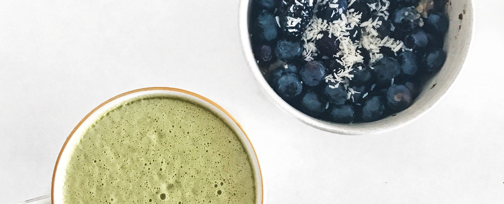
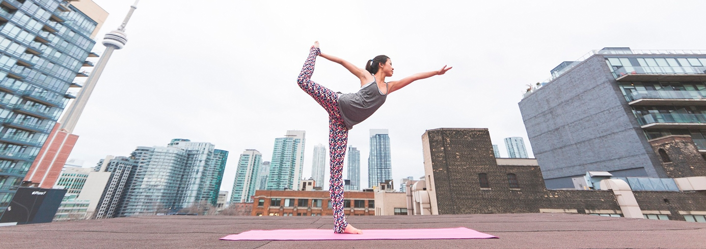
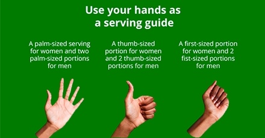
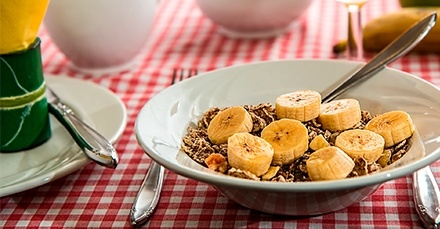
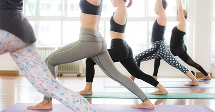
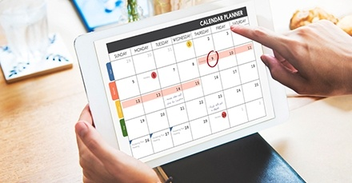
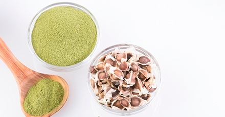
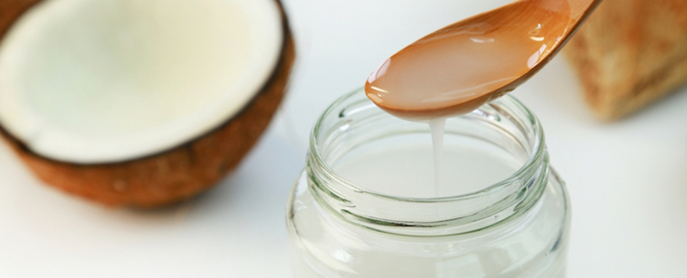

Populárne články

5 tipov, ako začať so zdravým životným štýlom
Zdravý životný štýl je taký, ktorý pomáha udržiavať a zlepšovať vaše zdravie a celkovú pohodu. Existuje mnoho spôsobov, ako viesť zdravý životný štýl – napríklad zdravé stravovanie, fyzická aktivita, udržiavanie zdravej telesnej hmotnosti či zvládanie stresu. Zdravý životný štýl však nie je len o zdravom stravovaní a cvičení; zahŕňa aj starostlivosť o „celého človeka“ – o vašu fyzickú, duševnú, emocionálnu a duchovnú pohodu. Znamená to teda starať sa o seba zvnútra aj zvonku.
AKO VIESŤ ZDRAVÝ ŽIVOTNÝ ŠTÝL
Hoci existuje mnoho bežných spôsobov, ako viesť zdravý životný štýl, jeho konkrétna podoba je u každého človeka iná a pre každého znamená niečo trochu odlišné. Bez ohľadu na to, akú cestu si zvolíte, zdravý životný štýl je kľúčovým prvkom prevencie ochorení, celkovej pohody a dlhovekosti. Ak venujete pozornosť svojmu stravovaniu, fyzickej aktivite a miere stresu, dokážete efektívne vyvážiť všetky aspekty svojho života a starostlivosť o seba ako celok. Nižšie uvádzame 10 dôležitých krokov, ktoré vám pomôžu viesť zdravý životný štýl:
1. Stravujte sa vyvážene
Vyvážená strava nemusí byť nudná. Pokiaľ prijímate dostatočné množstvo bielkovín, sacharidov, vitamínov, minerálov a tukov, kúsok čokoládovej torty, na ktorý máte práve chuť, by vám nemal príliš uškodiť. Vychutnávajte si jedlo, dôkladne ho požujte a dbajte na pestrosť stravy – zahrňte do nej napríklad päť porcií ovocia alebo zeleniny denne. Nadmerná konzumácia spracovaných potravín či sladkostí môže spôsobiť, že sa budete cítiť malátni.
Pite viac vody. Väčšina z nás denne nevypije dostatok vody. Voda je nevyhnutná pre správne fungovanie nášho tela. Vedeli ste, že viac ako 60 % nášho tela tvorí voda? Voda je potrebná na zabezpečenie telesných funkcií, odstraňovanie odpadových látok a rozvádzanie živín a kyslíka po celom tele. Keďže vodu denne strácame močením, vyprázdňovaním, potením a dýchaním, musíme jej zásoby dopĺňať. Keďže strava pokrýva približne 20 % nášho príjmu tekutín, znamená to, že na udržanie hydratácie by sme mali denne vypiť asi 8 až 10 pohárov vody. Jedným zo spôsobov, ako zistiť, či ste dostatočne hydratovaní, je pohľad na moč – mal by byť bezfarebný alebo mierne žltý. Ak to tak nie je, neprijímate dostatok vody! Medzi ďalšie príznaky patrí: suché pery, sucho v ústach a zriedkavé močenie.
Jedzte viac ovocia a zeleniny. Ovocie obsahuje množstvo vitamínov a minerálov. Vitamíny a minerály by ste mali v čo najväčšej miere získavať z každodennej stravy. Potešte svoje chuťové poháriky týmto výživným ovocím: vodný melón, marhule, avokádo (áno, avokádo je technicky ovocie!), jablká, cukrový melón, grapefruit, kivi, guava, papája, jahody. Podobne ako ovocie, aj zelenina je dôležitá pre dobré zdravie. Odborníci odporúčajú konzumovať 5 až 9 porcií ovocia a zeleniny denne, čo však môže byť niekedy náročné. Kedykoľvek je to možné, zaraďte do svojho jedálnička potraviny, ako sú červená fazuľa, čierna fazuľa, špargľa, dlhé fazuľové struky, zelené fazuľky a mrkva. Zamyslite sa nad svojou obľúbenou zeleninou a nad tým, ako jej do každodennej stravy zaradiť viac; vyberajte si pritom potraviny s výraznými farbami. Farebné ovocie a zelenina prospievajú zdraviu, pretože z tela odstraňujú látky, ktoré poškodzujú naše bunky. Doprajte si preto ovocie a zeleninu rôznych farieb: biele (banány, huby), žlté (ananás, mango), oranžové (pomaranče, papája), červené (jablká, jahody, paradajky, vodný melón), zelené (guava, avokádo, uhorky, šalát, zeler), fialové/modré (černice, baklažán, sušené slivky).
2. Nájdite si čas na oddych
Relaxácia je pre zdravú myseľ veľmi dôležitá. Nech už si zvolíte akýkoľvek spôsob oddychu – či už ide o hlboké dýchanie, jogu, rybárčenie, kúpeľ alebo čítanie knihy – skúste si, ak sa dá, dopriať hodinu relaxu denne. Psychické vyčerpanie môže viesť k stresu, depresii a úzkostným poruchám. Dnešný životný štýl býva často hektický – keď práve nepracujete, naháňate sa okolo detí, pobehujete po obchode s potravinami alebo robíte niečo iné. Oddýchnite si! Zhlboka dýchajte. Aj pätnásť minút je lepších než nič, no skúste si na to vyhradiť celú hodinu denne.
Zámerne zhlboka dýchaj. Kyslík je životne dôležitý zdroj života. Možno viete, ako dýchať, no dýchate správne? Väčšina z nás nedýcha správne – dýchame len plytko a využívame pritom iba tretinu kapacity svojich pľúc. Pri plnom nádychu sa pľúca úplne naplnia, brušná stena sa vyklenie a ramená zostávajú takmer nehybné. Hlboké dýchanie prináša mnohé výhody, medzi ktoré patrí zníženie stresu a krvného tlaku, posilnenie brušných a črevných svalov, ako aj úľava od celkových telesných bolestí. Hlboké dýchanie tiež podporuje lepšie prekrvenie, pomáha pri vyplavovaní toxínov z tela a prispieva ku kvalitnejšiemu spánku.

3. Pohni sa!
Neexistuje žiadna výhovorka, prečo necvičiť, pretože sa skutočne nájde niečo pre každého. Nie každý má rád behanie na bežeckom páse alebo dvíhanie činiek v posilňovni, no akákoľvek aktivita, pri ktorej sa vám zrýchli tep, predstavuje dobrý kardiovaskulárny tréning. Čo tak zahrať si tenis, ísť si zaplávať s priateľom, prípadne začať so sebaobranou či bojovým umením? Ak vám nenapadá nič lepšie, vybehnite a zbehnite párkrát po schodoch. Cítite sa už lepšie? Pri cvičení sa uvoľňujú endorfíny, ktoré vám zlepšia náladu.
Často meditujte. Meditácia upokojuje myseľ a prináša pokoj duši. Pomôže vám tiež lepšie zvládať stres vo vašom živote.
Cvičte pravidelne. Ak môžete, cvičte nielen párkrát do týždňa, ale každý deň. Pohyb je kľúčom k zdravému životu. Každodenné cvičenie môže mnohými spôsobmi zlepšiť vaše zdravie. Môže prispieť k dlhšiemu životu, znížiť riziko ochorení, pomôcť zvýšiť hustotu kostí a podporiť chudnutie. Jednoduchým krokom – najmä na kratšie vzdialenosti – je uprednostniť chôdzu pred jazdou autom, mestskou dopravou či inými dopravnými prostriedkami. Namiesto výťahu môžete použiť schody. Vyberte si také pohybové aktivity, ktoré vás bavia a dajú sa ľahko vykonávať doma alebo vonku. Keď vás zvolené fyzické aktivity tešia, je pravdepodobnejšie, že pri nich vydržíte a budete sa im venovať prirodzene a s radosťou. Cvičenie je o upevňovaní zdravia a zároveň o zábave. Okrem toho, striedanie rôznych druhov cvičení zaistí, že vás táto činnosť neprestane baviť.
4. Obmedzte fajčenie a pitie
Stretli ste už niekedy fajčiara, ktorý je rád, že začal fajčiť? Ani ja nie. Je to tá vôbec najničivejšia vec, akú môžete svojmu telu urobiť. Konzumácia alkoholu môže byť škodlivá, ak to s ním preháňate alebo pijete nárazovo, no ako pri väčšine vecí, kľúčom je striedmosť. Dokonca bolo preukázané, že pohár červeného vína prospieva srdcu. Príliš veľké množstvo však môže mať na vaše zdravie zničujúce následky. Fajčenie výrazne zvyšuje riziko vzniku rakoviny pľúc, obličiek či pažeráka, infarktu a ďalších ochorení. Ani fajčenie „ľahkých“ (light) cigariet neznižuje zdravotné riziká. Ak fajčíte, prestaňte s tým – nielen kvôli sebe, ale aj kvôli svojej rodine a priateľom. Pasívne fajčenie (vdychovanie vzduchu znečisteného fajčiarmi) môže spôsobiť mnohé z tých istých dlhodobých ochorení ako priame fajčenie. Neexistuje žiadna bezpečná úroveň pasívneho fajčenia; aj krátkodobé vystavenie môže byť pre vaše zdravie škodlivé. Ak je to možné, vyhýbajte sa fajčiarom a cigaretovému dymu, kdekoľvek sa dá.
5. Obmedzte mastné a sladké jedlá, sladené nápoje a kofeín.
Ak je to možné, znížte príjem rýchleho občerstvenia, hranolčekov, šišiek, čipsov, hranolčekov a vyprážaných jedál. Nielenže veľmi priberajú (1 polievková lyžica oleja má 120 kalórií), ale vyprážané jedlá obsahujú akrylamid, potenciálne rakovinotvornú chemikáliu. Existujú lepšie alternatívy, ako napríklad grilované, dusené, restované alebo dokonca surové jedlá. Obmedzenie sladkých jedál je tiež lepšie pre vaše zdravie. Patria sem cukríky, tyčinky, pečivo, čokoláda, sušienky, koláče a želé šišky. Nielenže vás nezasýtia, ale kvôli cukrovému návalu spôsobujú, že chcete jesť viac. Dajte si radšej zdravé občerstvenie, ako je ovocie, šaláty, čisté džúsy a nespracované potraviny. Nápoje s kofeínom sú diuretiká, čo znamená, že urýchľujú tvorbu moču. To znamená, že vás nehydratujú tak dobre ako obyčajná voda. Sóda je tiež nezdravá, spôsobuje priberanie na váhe a je umelým stimulantom. Nahraďte sódu vodou alebo zeleninovými šťavami.

Ako odmerať porciu
Veľkosti pomocou rúk
Prečítať článok

Stručný sprievodca intuitívnym
stravovaním
Prečítať článok

Vodná bilancia, význam
správnej hydratácie
Prečítať článok

Ako kúpiť to najlepšie
Nohavice na jogu
Prečítať článok
Tipy na čisté stravovanie
Rozpočet
Prečítať článok

Ako byť viac
Disciplinovaný
Prečítať článok

5 wellness trendov, ktoré si zamilujete
Uvidíme sa v roku 2019
Prečítať článok
